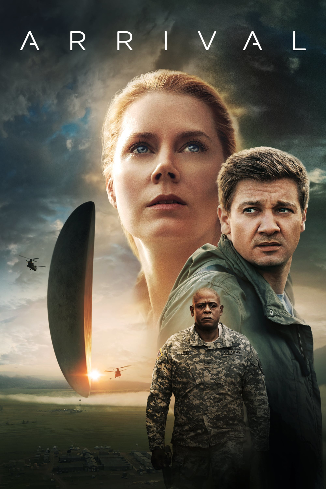

Мировая премьера: 11 ноября 2016
Слоган: Новый взгляд на первый контакт.
Сюжет: Когда в небе по всему миру неожиданно возникают космические корабли загадочных пришельцев, полковнику Веберу поручают собрать особый отряд для контакта с незваными гостями. В него включают лингвиста Луизу Бэнкс и физика Иэна Доннелли. Стоя на пороге глобальной войны, Бэнкс вместе с командой лучших специалистов пускается в гонку со временем. Ведь на карту поставлена не только их собственная жизнь, но и судьба всего человечества.
Режиссёр: Дени Вильнёв
В основе: Повесть Теда Чана "История твоей жизни" (США, 1998)
В ролях:
| Эми Адамс | Доктор Луиза Бэнкс |
| Джереми Реннер | Доктор Иэн Доннелли |
| Форест Уитакер | Полковник Джи Ти Вебер |
| Майкл Стулбарг | Агент Дэвид Хэлперн |
| Ци Ма | Генерал Шан |
Бюджет: $ 47 млн.
Кассовые сборы в США: $ 100 млн.
Кассовые сборы в мире: $ 213 млн.
Продолжительность: 1 ч. 51 мин.
Рейтинг: 7.9